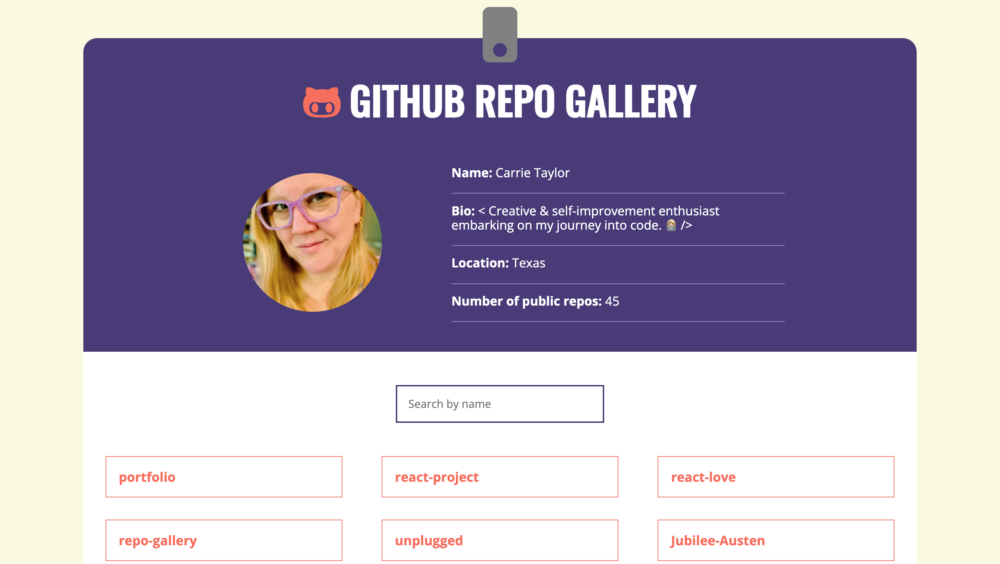

hi, i'm carrie taylor.
>web developer.<
tea drinker.
native texan.
language nerd.
üå±personal growth junkie.
barbecue snob.
my journey into tech as a
Front-end Web Developer has not been linear, but one with
hills and valleys and unexpected detours. During my time in
other industries, something was always missing... I needed a
challenge that would also engage my creativity. Once I brought
ideas to life with code, my path was clear.
Now, I
am eager to apply my diverse skills and creativity while
continuing to grow as a person and a professional in this
field. Transitioning to tech may be new for me, but I believe
that embracing
a growth mindset is key
in both tech and in life. Broadening my skill set has been
very fulfilling thus far and I’m thrilled to see where this
road takes me!
When I'm not immersed in code I'm
spending time with family, but you can also catch me with a
sketchbook, an audiobook, or on a pickleball court.
Skills
developer skills
- html5
- css3
- git and command line
- github
- version control
- flexbox
- media queries
- responsive typography
- apis
- manipulating the dom
- vanilla javascript
- es6
- jsx
- managing data flow
tech stack
- chrome devtools
- visual studio code
- git
- github
- command line
- codesandbox
Work
✨live site

super sticky notes
Developed an interactive app that allows users to create
“sticky notes” on the screen for note-taking. The user can
add, write, search, edit and remove notes as needed.
Skills & Tools: CodeSandbox, ES6, JSX, Managing
Data Flow and Manipulating the DOM.
✨live site
github repo gallery
Created a dynamic gallery of my repos using APIs and data from
my GitHub profile. Visitors can search by name and click on
repos to see more details or view the repo in GitHub.
Skills & Tools: Vanilla JavaScript, GitHub APIs
and Manipulating the DOM.
✨live site

guess the word
Coded this game as a greenfield project with Vanilla
JavaScript. Players guess a word one letter at a time. If all
letters are guessed correctly before the allotted guesses are
used up, they win!
Skills & Tools: Vanilla JavaScript and
Manipulating the DOM.
✨live site

unplugged
Built this multi-page responsive site for a work retreat with
Flexbox. This design has several sections, including a Cards
design pattern that can be repurposed for other sites.
Skills & Tools: HTML5, CSS3, Flexbox, Media
Queries, and Responsive Typography.
✨live site

rogue pickings
Converted a simple static website into this responsive
homepage, perfect for a pop-up restaurant or food truck, using
Flexbox.
Skills & Tools: HTML5, CSS3, Flexbox, Media
Queries and Responsive Typography.